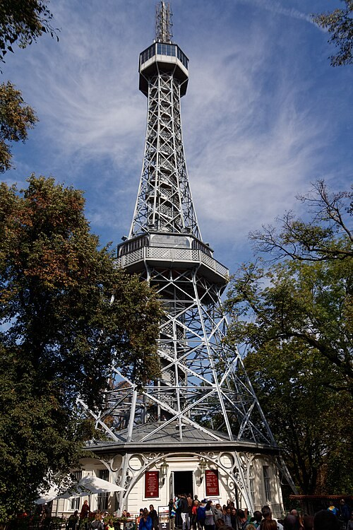

Petřín kilátótorony (Petřínská rozhledna)
A Petřín tornyához érve azonnal felismerhető a párizsi ihletés. A karcsú acélrácsos szerkezet az Eiffel torony gondolatát ültette át egy prágai dombtetőre. Itt azonban a magaslat maga is hozzájárul a kilátás élményéhez. A torony és a domb együtt jóval nagyobb térbeli hatást kelt, mint amit az építmény mérete önmagában ígér.
A kilátó 1891-ben, a prágai jubileumi kiállítás idején készült. Megépítésében a Cseh Turisták Klubjának kezdeményezése fontos szerepet játszott. A korszakban a kirándulás, a technika és a városi szabadidő új lehetőségei találkoztak. A torony ebből a lelkes, felfedező hangulatból született.
Nézzük meg alulról a tartószerkezetet, mielőtt felfelé indulnánk. Az acél elemei nyitva hagyják a látványt, mégis világosan kirajzolják az épület rendjét. A szerkezet itt nem rejtett háttér, hanem a megjelenés legfontosabb része. Az ember a saját mozgásával együtt érzékeli a rácsok és a környezet folyamatosan változó viszonyát.
A feljutás során a város fokozatosan emelkedik ki a fák fölött. Fentről a vár, a Moldva ívei és a történelmi városrészek könnyebben összekapcsolhatók. Tiszta időben a távolabbi cseh tájra is messzire elláthatunk. Azt azonban ne várjuk, hogy a teljes ország szó szerint egyetlen panorámában megjelenjen előttünk.
A kilátás megértéséhez keressünk először három biztos tájékozódási pontot. A vár, a Károly híd és az Óváros tornyai jó kiindulást adhatnak. Utána már a kevésbé ismert városrészek is viszonyíthatók hozzájuk. A panoráma így nem puszta háztetőtenger, hanem a korábban bejárt és a még előttünk álló helyek térképe lesz.
A torony körüli Petřín parkjai önmagukban is megérnek egy sétát. A történethez a századforduló városi kirándulókultúrája ugyanúgy hozzátartozik, mint az acélszerkezet technikája. A feljutás és a lift használata az aktuális üzemeltetési feltételekhez igazodik. Indulás előtt ellenőrizzük a külön látogatási megjegyzést, mert a torony időszakos zárása nem feltétlenül jelenti az egész domb lezárását.
50.083544, 14.395050